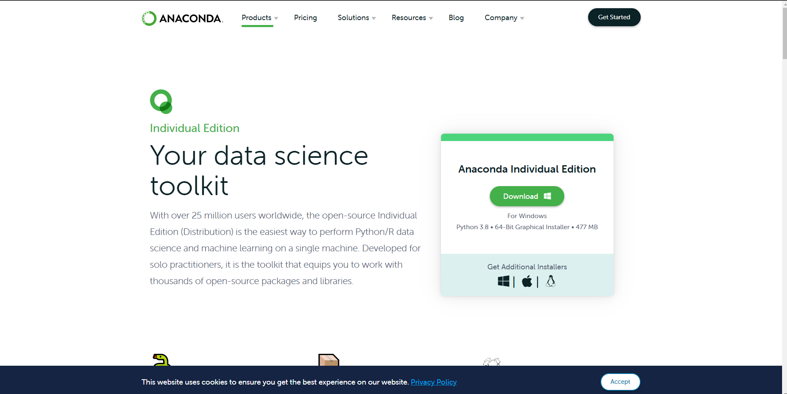
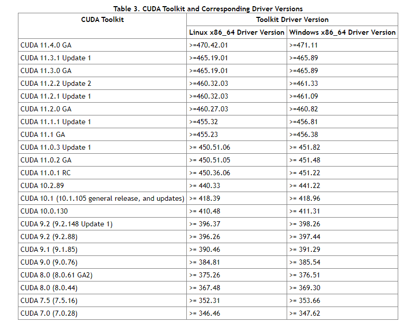
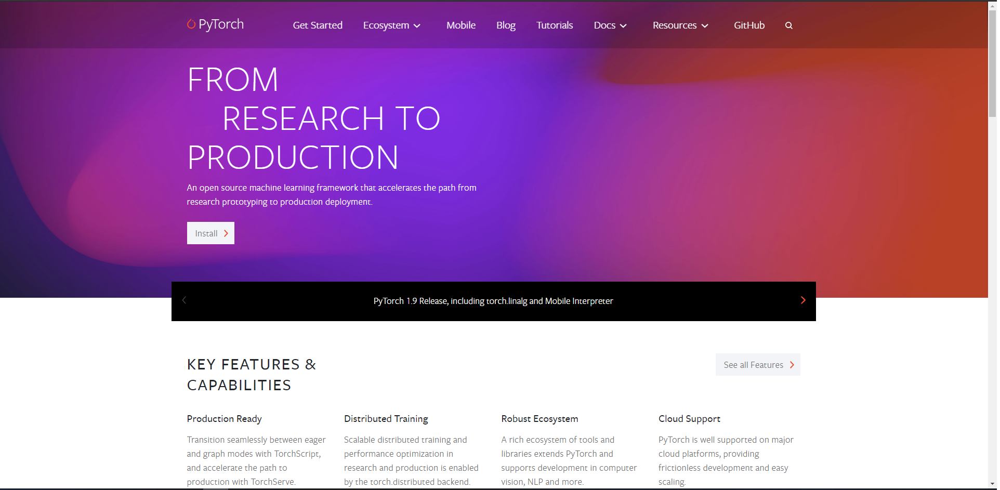
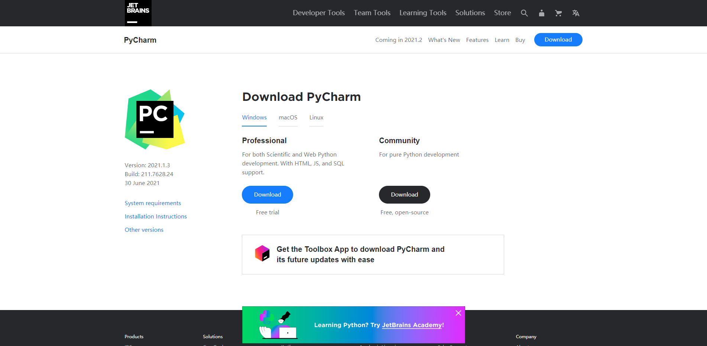

1.2 PyTorch的安装⚓︎
PyTorch的安装是我们学习PyTorch的第一步，也是经常出错的一步。在安装PyTorch时，我们通常使用的是Anaconda/miniconda+Pytorch+ IDE 的流程。
经过本节的学习，你将收获：
- Anaconda/miniconda的安装及其常见命令
- PyTorch的安装流程
- 如何选择一个适合自己的PyTorch版本
1.2.1 Anaconda的安装⚓︎
在数据科学和最近很火的深度学习中，要用到大量成熟的package。我们一个个安装 package 很麻烦，而且很容易出现包之间的依赖不适配的问题。而 Anaconda/miniconda的出现很好的解决了我们的问题，它集成了常用于科学分析（机器学习， 深度学习）的大量package，并且借助于conda我们可以实现对虚拟Python环境的管理。
Step 1：安装Anaconda/miniconda⚓︎
登陆Anaconda | Individual Edition，选择相应系统DownLoad，此处以Windows为例（Linux可以点击链接选择合适的版本进行下载或者通过官方提供的shell脚本进行下载）：

Step 2：检验是否安装成功⚓︎
在开始页找到Anaconda Prompt，一般在Anaconda3的文件夹下,( Linux在终端下就行了）

Step 3：创建虚拟环境⚓︎
Linux在终端(Ctrl+Alt+T)进行，Windows在Anaconda Prompt进行
查看现存虚拟环境⚓︎
查看已经安装好的虚拟环境，可以看到我们这里已经有两个环境存在了
conda env list
创建虚拟环境⚓︎
在深度学习和机器学习中，我们经常会创建不同版本的虚拟环境来满足我们的一些需求。下面我们介绍创建虚拟环境的命令。
conda create -n env_name python==version
# 注：将env_name 替换成你的环境的名称，version替换成对应的版本号，eg：3.8
注： 1. 这里忽略我们的warning，因为我们测试的时候已经安了又卸载一遍了，正常时是不会有warning的。 2. 在选择Python版本时，不要选择太高，建议选择3.6-3.8，版本过高会导致相关库不适配。
安装包⚓︎
conda install package_name
# 注：package_name 替换成对应的包的名称，eg: pandas
卸载包⚓︎
conda remove package_name
# 注：package_name 替换成对应的包的名称，eg: pandas
显示所有安装的包⚓︎
conda list
删除虚拟环境命令⚓︎
conda remove -n env_name --all
# 注：env_name 替换成对应的环境的名称
激活环境命令⚓︎
conda activate env_name
# 注：env_name 替换成对应的环境的名称
退出当前环境⚓︎
conda deactivate
Step 4：换源⚓︎
在安装package时，我们经常会使用pip install package_name和conda install package_name 的命令，但是一些package下载速度会很慢，因此我们需要进行换源，换成国内源，加快我们的下载速度。以下便是两种对应方式的永久换源。如果我们仅仅想为单次下载换源可以使用pip install package_name -i https://pypi.tuna.tsinghua.edu.cn/simple进行下载。
pip换源⚓︎
Linux：⚓︎
Linux下的换源，我们首先需要在用户目录下新建文件夹.pip，并且在文件夹内新建文件pip.conf，具体命令如下
cd ~
mkdir .pip/
vi pip.conf
pip.conf添加下方的内容:
[global]
index-url = http://pypi.douban.com/simple
[install]
use-mirrors =true
mirrors =http://pypi.douban.com/simple/
trusted-host =pypi.douban.com
Windows：⚓︎
1、文件管理器文件路径地址栏敲：%APPDATA% 回车，快速进入 C:\Users\电脑用户\AppData\Roaming 文件夹中
2、新建 pip 文件夹并在文件夹中新建 pip.ini 配置文件
3、我们需要在pip.ini 配置文件内容，我们可以选择使用记事本打开，输入以下内容，并按下ctrl+s保存，在这里我们使用的是豆瓣源为例子。
[global]
index-url = http://pypi.douban.com/simple
[install]
use-mirrors =true
mirrors =http://pypi.douban.com/simple/
trusted-host =pypi.douban.com
conda换源（清华源）官方换源帮助⚓︎
Windows系统：⚓︎
TUNA 提供了 Anaconda 仓库与第三方源的镜像，各系统都可以通过修改用户目录下的 .condarc 文件。Windows 用户无法直接创建名为 .condarc 的文件，可先执行conda config --set show_channel_urls yes生成该文件之后再修改。
完成这一步后，我们需要修改C:\Users\User_name\.condarc这个文件，打开后将文件里原始内容删除，将下面的内容复制进去并保存。
channels:
- defaults
show_channel_urls: true
default_channels:
- https://mirrors.tuna.tsinghua.edu.cn/anaconda/pkgs/main
- https://mirrors.tuna.tsinghua.edu.cn/anaconda/pkgs/r
- https://mirrors.tuna.tsinghua.edu.cn/anaconda/pkgs/msys2
custom_channels:
conda-forge: https://mirrors.tuna.tsinghua.edu.cn/anaconda/cloud
msys2: https://mirrors.tuna.tsinghua.edu.cn/anaconda/cloud
bioconda: https://mirrors.tuna.tsinghua.edu.cn/anaconda/cloud
menpo: https://mirrors.tuna.tsinghua.edu.cn/anaconda/cloud
pytorch: https://mirrors.tuna.tsinghua.edu.cn/anaconda/cloud
simpleitk: https://mirrors.tuna.tsinghua.edu.cn/anaconda/cloud
这一步完成后，我们需要打开Anaconda Prompt 运行 conda clean -i 清除索引缓存，保证用的是镜像站提供的索引。
Linux系统：⚓︎
在Linux系统下，我们还是需要修改.condarc来进行换源
cd ~
vi .condarc
vim下，我们需要输入i进入编辑模式，将上方内容粘贴进去，按ESC退出编辑模式，输入:wq保存并退出
我们可以通过conda config --show default_channels检查下是否换源成功，如果出现下图内容，即代表我们换源成功。

同时，我们仍然需要conda clean -i 清除索引缓存，保证用的是镜像站提供的索引。
1.2.2 查看显卡⚓︎
该部分如果仅仅只有CPU或者集显的小伙伴们可以跳过该部分
windows：⚓︎
我们可以通过在cmd/terminal中输入nvidia-smi（Linux和Win命令一样）、使用NVIDIA控制面板和使用任务管理器查看自己是否有NVIDIA的独立显卡及其型号


linux：⚓︎

我们需要看下版本号，看自己可以兼容的CUDA版本，等会安装PyTorch时是可以向下兼容的。具体适配表如下图所示。

1.2.3 安装PyTorch⚓︎
Step 1：登录PyTorch官网⚓︎

Step 2：Install⚓︎

这个界面我们可以选择本地开始（Start Locally），云开发（Cloud Partners)，以前的Pytorch版本（Previous PyTorch Versions），移动端开发（Mobile），在此处我们需要进行本地安装。
Step 3：选择命令⚓︎
我们需要结合自己情况选择命令并复制下来，然后使用conda下载或者pip下载（建议conda安装）
打开Terminal，输入conda activate env_name(env_name 为你对应的环境名称)，切换到对应的环境下面，我们就可以进行PyTorch的安装了。

注： 1. Stable代表的是稳定版本，Preview代表的是先行版本 2. 可以结合电脑是否有显卡，选择CPU版本还是CUDA版本，CUDA版本需要拥有独显且是NVIDIA的GPU 3. 官方建议我们使用Anaconda/miniconda来进行管理 4. 关于安装的系统要求
- Windows：
- Windows 7及更高版本；建议使用Windows 10或者更高的版本
- Windows Server 2008 r2 及更高版本
- Linux：以常见的CentOS和Ubuntu为例
- CentOS, 最低版本7.3-1611
- Ubuntu, 最低版本 13.04，这里会导致cuda安装的最大版本不同
-
macOS：
- macOS 10.10及其以上
-
有些电脑所支持的cuda版本<10.2，此时我们需要进行手动降级，即就是cudatoolkit = 你所适合的版本，但是这里需要注意下一定要保持PyTorch和cudatoolkit的版本适配。查看Previous PyTorch Versions | PyTorch
Step 4：在线下载⚓︎
如果我们使用的Anaconda Prompt进行下载的话，我们需要先通过conda activate env_name，激活我们的虚拟环境中去，再输入命令。
注: 我们需要要把下载指令后面的 -c pytorch 去掉以保证使用清华源下载，否则还是默认从官网下载。
Step 5：离线下载⚓︎
Windows：⚓︎
在安装的过程中，我们可能会出现一些奇奇怪怪的问题，导致在线下载不成功，我们也可以使用离线下载的方法进行。
下载地址：https://mirrors.tuna.tsinghua.edu.cn/anaconda/cloud/pytorch/
通过上面下载地址，我们需要下载好对应版本的pytorch和 torchvision 包，然后打开Anaconda Prompt/Terminal中，进入我们安装的路径下。
cd package_location
conda activate env_name
conda install --offline pytorch压缩包的全称（后缀都不能忘记）
conda install --offline torchvision压缩包的全称（后缀都不能忘记）
Step 6：检验是否安装成功⚓︎
进入所在的虚拟环境，紧接着输入python，在输入下面的代码。
import torch
torch.cuda.is_available()
False
- Windows系统

- Linux系统

PyTorch的安装绝对是一个容易上火的过程，而且网络上的教程很可能对应早期的版本，或是会出现一些奇奇怪怪的问题，但是别担心，多装几次多遇到点奇奇怪怪的问题就好了！
1.2.4 PyCharm安装（可选操作）⚓︎
VSCode这些也是ok的，安装PyCharm非必须操作
Linux，Windows此处操作相同，我们建议Windows的同学安装Pycharm即可，因为在Linux上pycharm并不是主流的IDE。
Step 1：进入官网下载⚓︎
如果是学生的话可以使用学生邮箱注册并下载Professional版本，Community版本也基本能满足我们的日常需求。

Step 2：配置环境⚓︎
我们需要将虚拟环境设为我们的编译器，具体操作：File --> Settings --> Project:你的项目名称--> Python Interpreter
进去后，我们可以看见他使用的是默认的base环境，现在我们需要将这个环境设置成我们的test环境,点击齿轮，选择Add

点击Conda Environment ，选择Existing environment，将Interpreter设置为test环境下的python.exe

注：如果在pycharm的环境时，想进入我们的虚拟环境，要使用conda activate 名称
创建日期: November 30, 2023